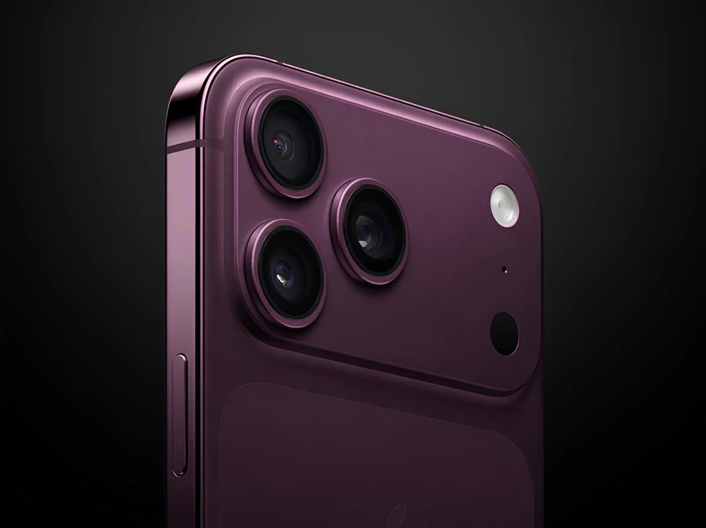
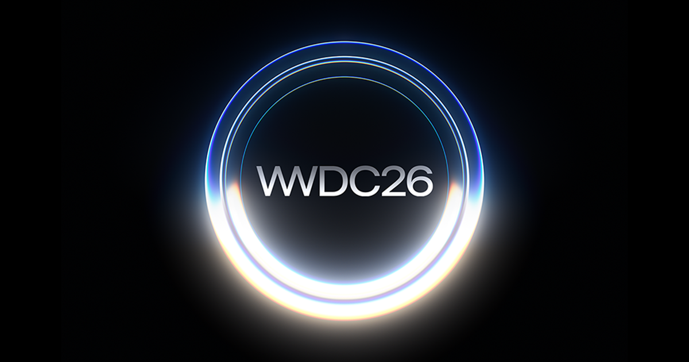
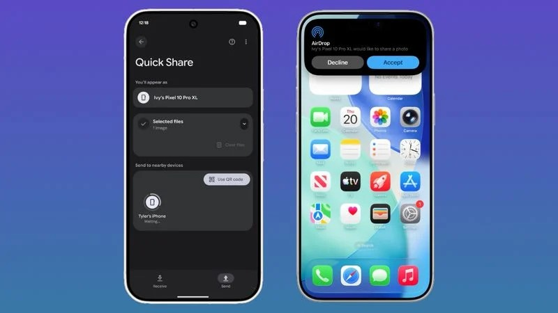

iPhone 18 Pro lộ dung lượng pin khiến fan Apple đứng ngồi không yên
Vietnamnet 3 giờ

Apple đặt cược lớn vào AI tại WWDC 2026, Siri có thể 'lột xác' toàn diện
Tuổi Trẻ 6 giờ

Người dùng iPhone sắp được sử dụng Siri tích hợp AI mới
Dân Trí 6 giờ
Apple sắp tung ra không chỉ một mà hai thiết bị ‘Ultra’?
Vietnamnet 13 giờ
iPhone nào được cập nhật iOS 27?
Dân TRí 9 giờ